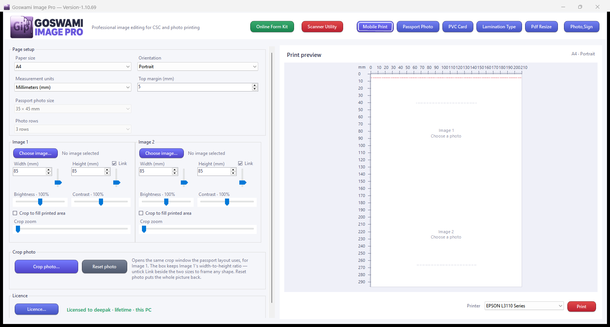
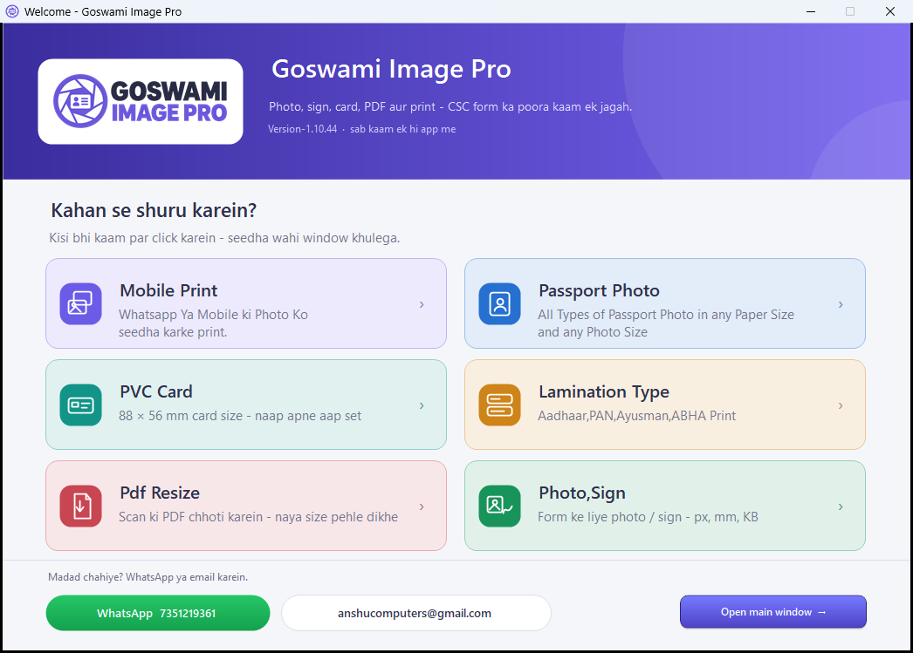

CSC aur photo studio ke liye banaya gaya app. Char taiyar layout, crop, 360° rotate, aur online form ke liye “jitna KB bolo utna hi” resize. Pehle 3 din poora kaam chalta hai — bas page par TRIAL VERSION ka watermark rehta hai.

App khulte hi welcome page aata hai — logo, WhatsApp/email aur chhe rang-birange button. Jo kaam chahiye us button par click karein, seedha wahi window khul jati hai.
Har button par uske kaam ka chhota chitra (icon) hai: Mobile Print, Passport Photo, PVC Card, Lamination Type, Pdf Resize aur Photo,Sign.
Uss line ke right end me do button bhi hai — hara Online Form Kit aur laal Scanner Utility. Form ka saara saman ek saath banane ka kaam wahin se shuru hota hai, aur scan ka kaam wahin se — tile dhundhne ki zaroorat nahi.
Niche “Open main window” se bina kaam chune seedha main window khulta hai. Upar ka (X) dabana matlab app hi band karna — phir se chalane ke liye icon par dubara click karein. Main window bilkul pehle jaisa hai — header, layout, crop, resize, PDF, print sab wahi.

Upar char button hain. Layout badalte hi kagaz, size aur printer settings apne aap set ho jaate hain — galat size chunne ka chance nahi.
Photo + photo, ya photo + sign. Dono ke alag size, alag crop, alag brightness — A4 par side by side.
35 × 45 mm, 30 × 40 mm, 25 × 35 mm ya apna size, aur 1 se 6 row tak. Visa, passport aur form ke liye. Top margin mm me likhiye — photo kagaz par utni hi doori se chapegi.
Image 1 ke bagal me Scan button hai — photo kaagaz scanner ke glass par rakhiye, button dabaiye, scanner ki apni window me scan kariye. Photo seedha layout me aa jaati hai; alag se file bana kar “Choose image” karne ki zaroorat nahi.
Card ke size ka photo, kagaz aur margin app khud set karta hai. 0 margin par bhi photo ka upar ka hissa kagaz se bahar nahi jata.
A4 par patti kaat kar lamination pouch me dalne ke liye. Is layout me bhi 0 margin safe hai.
Ye sab trial me bhi poora chalta hai. Watermark ke alawa kuch kam nahi hota.
Header me hara Online Form Kit button — Scanner Utility ke bagal me, aur wahi button Welcome page par bhi hai. Form chuniye: NEET UG (NTA), UPSC CSE, UKPSC RO/ARO, Passport Seva, Bank PO (IBPS / SBI) ya Custom form (own sizes). Form chunte hi uska saara saman apni apni line me aa jaata hai — photo, signature, thumb, certificate. Har line ka naap aur uska KB ka upar wala hisaab khud badal sakte hai: portal kuch aur kahe to wahi number likh dijiye. Har line me teen kaam — Picture… se photo, File… se PDF ya image, Scan se seedha scanner. Jis line ka kaam nahi karna, uska tick hata dijiye.
Photo aur signature wali line me Scan ke bagal me Crop bhi hai. Scanner hamesha pure glass ka page deta hai — photo kone me basi ho to poora safed page passport photo ban jaata tha. Crop dabate hi wahi box khulta hai jo print page aur resize window me hai: box apni line ke naap ka shape rakhta hai, wheel se zoom, teer keys se hilana, ghoomane ka knob. Apply crop ke baad line ka KB ka hisaab foran badal jaata hai, aur Reset photo se poora page wapas mil jaata hai.
Neeche Build kit dabaiye. Documents me ek folder banta hai — har customer ka
apna, jaise Goswami Form Kits\PASSPORT\ramesh. Usme har file uske naap aur
KB ke hisaab se (ramesh_PHOTO_350x350_31KB.jpg), aur ek CHECKLIST.pdf.
Checklist me likha hota hai kaunsi file kis kaam ke liye hai, kitna KB chahiye tha, kitna
aaya aur theek hai ya nahi — customer ko de dijiye, portal par kaunsi file daalni hai
wahin se saaf dikhta hai. KB ka naap andaza nahi, file ke asli byte hai. Jo PDF bilkul
waisi hi chahiye, wo waisi hi jaati hai — chhoti nahi hoti. Folder ki jagah
Kit folder… se khud bhi chun sakte hai.
Header me laal Scanner Utility button — Mobile Print ke bagal me, alag khada. Wahi button Welcome page par bhi hai, “Kahan se shuru karein?” wali line ke right end me. Ek click me scanner ka kaam: window me sirf do button, Scan file aur 2 in 1 page. Scanned page Pdf Resize window me hi aate hai, wahi Rotate / Crop / Remove aur Save. Pdf Resize window me bhi laal Scan file button hai — ek page scan hone ke baad Add More File ka pop-up aata hai: Add More File dabate hi agla page usi file me jud jaata hai, Finish se file jitne page aaye utne se ban jaati hai. Kai page wala document seedha scanner se ek PDF. DPI scanner ki apni window me chuniye. Har page ko Rotate 90°, Crop ya Remove. 2 in 1 page — ek baar dabaiye, poora kaam ho jaata hai: pehle glass ke upar ke aadhe hisse ka scan, phir “paper palat kar usi jagah rakhiye” box, phir dusra scan. Dono aadhe page ek hi A4 par aa jaate hain, aur passbook ya ID card ka page lagbhag asli size par chhapta hai (kitna ghat kar chhapa gaya, app wo batata hai). Chhote scan apne asli size par chhapte hain (ID card 85.6 × 54 mm, passport photo 35 × 45 mm). Page par koi page-number label nahi lagta — jo scan kiya wahi saaf chhapta hai.
Pdf Resize window me PDF dijiye — app use padhkar naap batata hai aur usi settings par nayi chhoti PDF banata hai. DPI aur image quality apne haath me hai, isliye portal ka 150 KB ho ya 1.0 MB ka limit, wahi tak laaya ja sakta hai. Password se band PDF bhi chalti hai. Page ko Rotate, Crop ya Remove kar sakte hai; app page par koi page-number label nahi lagata.
Neeche do button: neela Save reduced PDF…, aur uske bagal me Save as
JPEG…. JPEG wala dabate hi folder chuniye — document ka har page apni
apni JPEG file ban kar us folder me aa jaata hai, naam document ke naam se
(aadhaar_page-1.jpg, aadhaar_page-2.jpg); ek hi page ho to sirf
aadhaar.jpg. JPEG wahi picture hai jo reduced PDF me jaati hai — PDF me
se nikaal kar milayein to byte-for-byte same milti hai. Neeche ki line kitna KB aaya wo
asli file ke hisaab se batati hai, aur Cancel dabane par kuch bhi likha nahi jaata.
Lamination Type me A4 par paanch alag file lag sakti hai. Har row ke neeche naya Two cards in this file tick hai — ek hi file me card ke aage aur peeche ka photo ho (ya do card ek hi scan me) to tick lagaiye. Crop window me dono card par box banaiye, aur print par dono cards patti ke left aur right aadhe hisse me aa jaate hai. Box khud poore aadhe hisse tak khinch jata hai, aur preview par % me likha hota hai ki print par photo kitna khinchega.
Har row me ab Remove button hai — galat file chali gayi ho to app band karne ki zaroorat nahi; wahi row khaali ho jati hai, baaki rows apni file ke saath waisi hi rehti hai. Khaali rows me ab “Image or PDF” wala text bhi nahi dikhta.
Crop box mouse se kheechiye ya arrow keys se bilkul sahi jagah baithaiye (Shift se size, Ctrl se bada step). Scroll wheel aur slider se zoom. Tedhi scan ya phone ki photo seedhi karne ke liye 360° ghumane ka knob.
Aap jitna KB bolenge, file utne hi KB ki banegi — andaza nahi, asli naap.
Size px, mm, cm ya inch me likh sakte hain. Ready size: 200×230 px photo,
140×60 px sign, 35×45 mm passport, 500×500 px square.
Naam apne aap ramesh_200x230_15kb.jpg jaisa ban jaata hai.
Photo ya sign/hastantaran wala kaagaz scanner se lene ke liye is window me
Scan photo button hai.
PDF se hi photo utha kar card ya lamination par print. Password se band PDF bhi chalti hai — app password puchta hai. (PVC Card aur Lamination Type layout me.)
Kagaz: A4, 4×6, 5×7, 4×3 inch. Portrait / landscape. Naap mm, cm ya inch. Print dabane se pehle page ka live preview screen par — preview par chakkar (scroll wheel) se 1× se 6× tak zoom hota hai, pakad kar (drag) hila sakte hai, aur double click se wapas 1×.
Screen hamesha halki (Light) rahti hai — counter ki roshni me bhi saaf dikhti hai. Photo files: JPG, JPEG, PNG, BMP, GIF, TIF.
Windows 10 ya 11 par seedha chalta hai. Installer wala file ek click me Start menu aur desktop shortcut bana deta hai; zip wala folder copy karke kahin se bhi chala sakte hain.
Dono files ek hi app hain, Version-1.10.69. Jo aapko sahi lage wahi lein.
| File | Kab lein | Size | SHA-256 |
|---|---|---|---|
| Goswami-Image-Pro-Setup-1.10.69.exe | Normal tarika. Double click, Install, Start menu se khol lein. | 1,008,640 B | 93b917f46ee492a4cad9e83656a21ba2ef42dec2a3cf48a22de0638b6772b712 |
| Goswami-Image-Pro-Trial-1.10.69.zip | Pen drive ya doosre PC par copy karke chalane ke liye. Folder kholiye, Goswami Image Pro.exe par double click. | 807,509 B | 5b9dc94fb864a910571f140f64ee2af634f3a8479429a7095abed7296f9b0c74 |
Poori features list, file me. App ke saare 61 kaam, hissa-war, ek A4 PDF me — apne paas rakhne ya customer ko dikhane ke liye: Goswami-Image-Pro-Features-1.10.69.pdf (2 page, Version-1.10.69).
Pehli baar par Windows kuch keh sakta hai. Ye file ek chhote business ki banayi hui file hai, isliye Windows ka SmartScreen kabhi-kabhi “Windows protected your PC” dikhata hai. Usme More info → Run anyway dabaiye. (Zip wali file par ye notice aksar nahi aata.)
Trial ke teesre din ka intezaar karne ki zaroorat nahi — jab manaye tab key le lijiye, watermark usi waqt band ho jayega. Key offline banti hai: app ko internet se chalne ki zaroorat nahi, aur aapki photo ya PC ki koi information kahin nahi jaati.
Jo dialog khulta hai usme aapke PC ka Install ID likha hota hai
(XXXX-XXXX-XXXX-XXXX). Ye sirf is PC ki pehchaan hai.
Dialog me “Get a licence key on WhatsApp 7351219361” ka button hai. Ek baar dabaiye — WhatsApp khul jayega aur message me aapka Install ID pehle se bhara hoga. Bas Send dabaiye. WhatsApp na ho to Copy se Install ID copy ho jata hai.
Badle me jo key milegi use wahi dialog me paste karke Activate. Watermark turant hamesha ke liye band, aur print wapas chalu.
Key usi PC ke Install ID par banti hai. PC badla ya Windows dobara install kiya to Install ID badal jayega — nayi key leni padegi. Purani key wapas kaam nahi karegi.

Jis din aap pehli baar us PC par app chalate hain, us din se 3 din. Har page par TRIAL VERSION ka watermark aata hai — screen par bhi, print hone wale kagaz par bhi.
App khula rehta hai. Photo choose karna, crop, zoom, rotate, resize, PDF, preview — sab pehle jaisa chalta rehta hai, bas page print nahi hota. Print dabane par app licence key dene ka mauka deta hai.
Folder copy karke doosre PC par chalayein to wahan bhi 3 din milenge. Licence key daalte hi watermark hamesha ke liye chala jata hai.